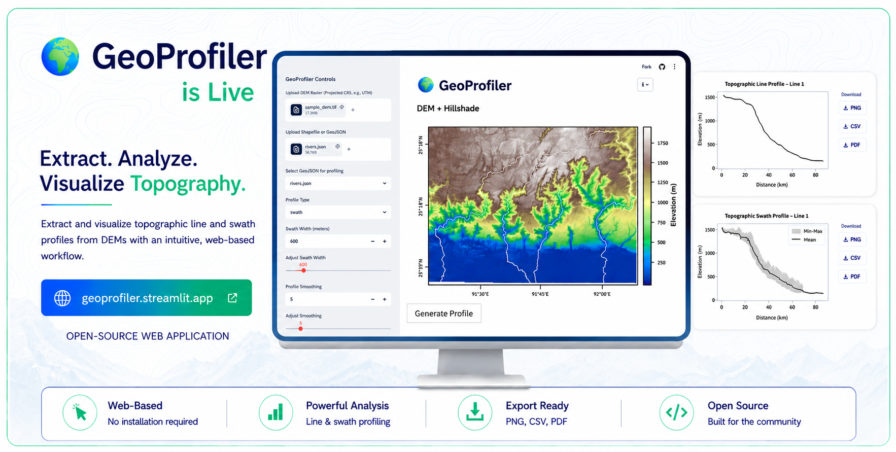
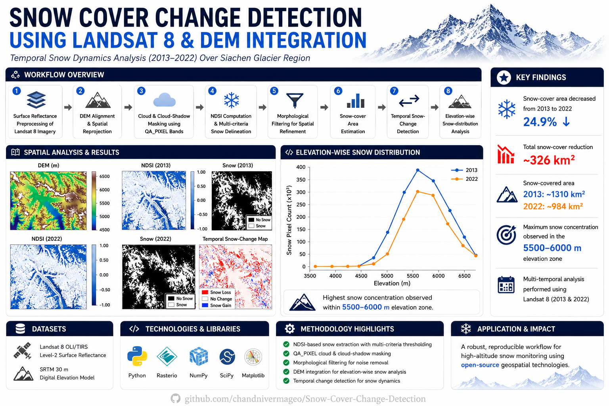

Remote Sensing, GIS, InSAR and Python-based geospatial projects.
An open-source web application for automated extraction and visualization of topographic line and swath profiles from DEM datasets.

Impact: Automates topographic profile generation from DEMs, enabling faster and more efficient terrain analysis.
Tools: Python, Streamlit, Rasterio, GeoPandas, NumPy, SciPy, Matplotlib
Web App GitHub Repository
Developed a Python-based workflow for snow-cover extraction and scene-based change detection using Landsat 8 imagery and DEM integration over the Siachen Glacier using observations from 2013 and 2022.

Impact: Demonstrated a reproducible workflow for snow-cover detection and scene-based change assessment using Landsat 8 imagery and DEM integration.
Tools: Python, Rasterio, NumPy, SciPy, Matplotlib
GitHub RepositoryImpact: Identified groundwater-induced land subsidence patterns in Northwest India through the integration of PS-InSAR deformation measurements, GRACE groundwater observations, and hydrogeological datasets.
Tools: SNAP, ENVI, SARPROZ, ArcGIS, QGIS